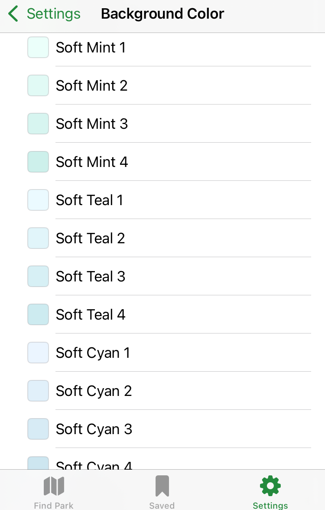
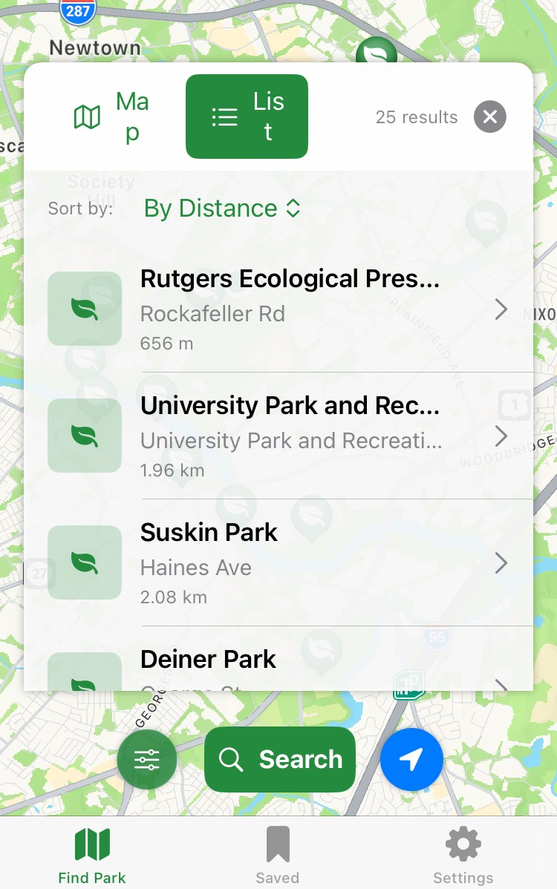
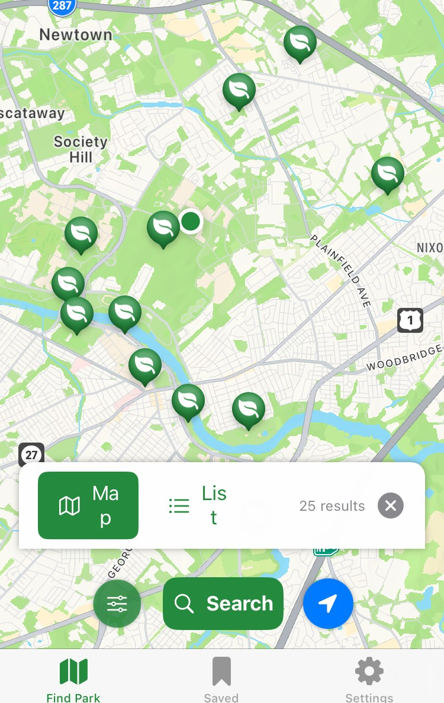
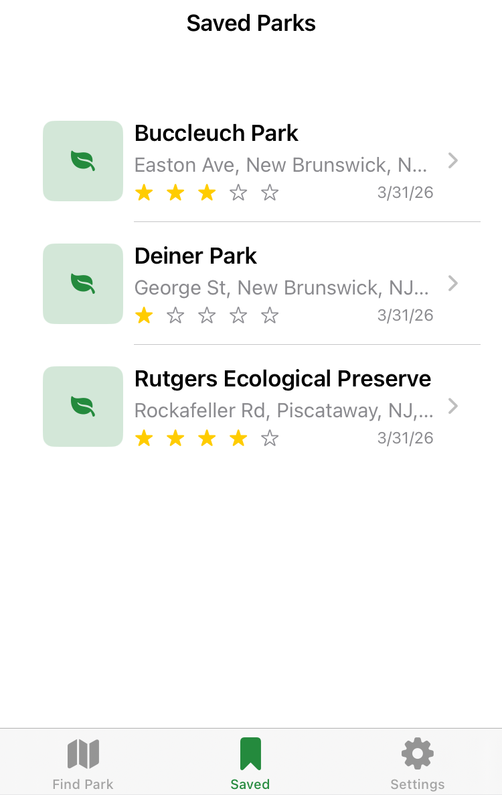

App Review
MapPark: A revolutionary greenspace locator?




MapPark is a mobile app on the iOS app store that helps you to find parks and other greenspaces near you. Developed by mobile app company BYNET, MapPark is among a catalog of apps that serve a wide variety of purposes.
The main interface of the app consists of an interactive map centered around your current location, if you were so willing as to give up your privacy. To get locations to show up on the map, you first need to start with the search settings. Sliding a toggle will allow you to select a desired search radius, ranging from 100m to 5,000m. Additionally, you can also select a specific park type to be filtered, including parks with a playground or sports facilities. Whether you customized the settings, or just left them as default, tapping on a button labeled “search” will populate the map with markers, pinpointing parks in the determined area. A list containing all the nearby parks can be toggled and sorted by name or by distance, serving as an alternative to the map display. Tapping on any one park location, whether from the map marker or the list, will bring up a unique pop-up for the park. This pop-up provides general information on the park including the park name, the closest major roadway, the distance from the user’s current location, as well as a link to a related website. Also included on this page is a button that redirects you to the Apple Maps app, which provides you with step-by-step directions on how to get to the specific park from your location.
My favorite feature of MapPark is the ability to create your own personalized list of parks under the Saved Parks page of the app. When you save a park, you can give it a rating from zero to five stars, upload photos you have taken of the park, and write down any notes you might want to remember about your experience there. Another thing I like about this app is the color customization it offers for the user interface. Offering a wide variety of color themes and background colors, it allows you to personalize the app well.
However, other aspects of the app I did not find as useful and can be improved. My main issue was with the app’s ability to determine what was a park (with nature and trees) and what was not. Many of the listings in brought up were parking garages or park offices that didn’t correspond with any actual greenspace. On top of that, the app interface was not very user-friendly in some parts, with text often not being displayed in its entirety and pop-ups covering other important aspects of the app.
After experimenting with this so called “park locator”, I found it not that much better at doing so than your average maps app from Google or Apple.
Pros
- Large Size (360 acres)
- 7 trails
- Open from dawn till dusk
- Through trail marking
- Educational signposts
- Dog-friendly
Cons
- Considers parking lots as parks
- Lacks community features
- Poor interface design